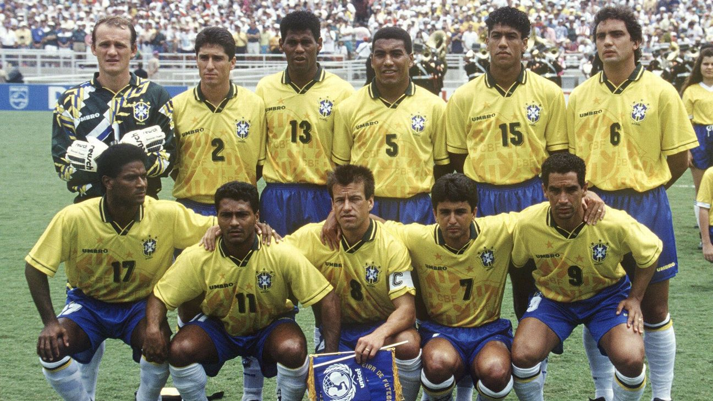

Os registros mais antigos sobre o Futebol praticado no Brasil datam de 1875, em Curitiba. Porém, ele se popularizou após ser introduzido à burguesia paulistana por Charles Miller, um jovem brasileiro que, em 1885, após viagem pela Inglaterra, trouxe consigo duas bolas de futebol e passou a tentar converter a comunidade de expatriados britânicos da cidade de São Paulo de jogadores de críquete para futebolistas, criando um clube de futebol no Brasil. O futebol se tornou rapidamente uma grande paixão para os brasileiros, quase uma religião, que frequentemente referem-se ao país como "a pátria de chuteiras" ou o "país do futebol", muito por conta das conquistas internacionais da Seleção Brasileira, que é a seleção mais vitoriosa do futebol mundial.

A grande habilidade com os pés pode ser devido à miscigenação e ao ritmo associados à capoeira e ao samba, caracterizados pelos movimentos dos pés para dançar ou para brincar com o ritmo dos tambores africanos. Acredita-se que este estilo tenha sido desenvolvido em bairros pobres habitados por pessoas de ascendência africana.
A chamada "escola brasileira de futebol" é conhecida pela criatividade, fluidez e estilo ofensivo de jogo. Por exemplo, driblar é uma parte essencial do seu estilo. A seleção brasileira é temida pelo mundo todo, por ter seu jogo extremamente ofensivo, habilidoso e alegre.